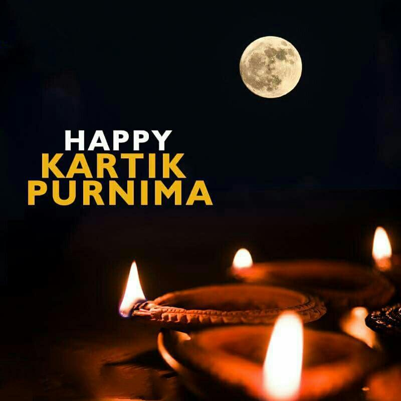

Tradition and Culture
"1947లో బ్రిటీష్ వలస పాలన నుండి దేశం స్వాతంత్య్రం పొందిన జ్ఞాపకార్థం భారతదేశంలో ప్రతి సంవత్సరం ఆగస్టు 15వ తేదీన స్వాతంత్య్రం దినోత్సవం జరుపుకుంటారు. ఈ రోజు భారతదేశంలో జాతీయ సెలవుదినం మరియు గొప్ప ఉత్సాహంతో మరియు దేశభక్తితో జరుపుకుంటారు.

Karthika Pournami
"1947లో బ్రిటీష్ వలస పాలన నుండి దేశం స్వాతంత్య్రం పొందిన జ్ఞాపకార్థం భారతదేశంలో ప్రతి సంవత్సరం ఆగస్టు 15వ తేదీన స్వాతంత్య్రం దినోత్సవం జరుపుకుంటారు. ఈ రోజు భారతదేశంలో జాతీయ సెలవుదినం మరియు గొప్ప ఉత్సాహంతో మరియు దేశభక్తితో జరుపుకుంటారు."1947లో బ్రిటీష్ వలస పాలన నుండి దేశం స్వాతంత్య్రం పొందిన జ్ఞాపకార్థం భారతదేశంలో ప్రతి సంవత్సరం ఆగస్టు 15వ తేదీన స్వాతంత్య్రం దినోత్సవం జరుపుకుంటారు. ఈ రోజు భారతదేశంలో జాతీయ సెలవుదినం మరియు గొప్ప ఉత్సాహంతో మరియు దేశభక్తితో జరుపుకుంటారు.

How to Celebrate
"1947లో బ్రిటీష్ వలస పాలన నుండి దేశం స్వాతంత్య్రం పొందిన జ్ఞాపకార్థం భారతదేశంలో ప్రతి సంవత్సరం ఆగస్టు 15వ తేదీన స్వాతంత్య్రం దినోత్సవం జరుపుకుంటారు. పొందిన జ్ఞాపకార్థం భారతదేశంలో ప్రతి సంవత్సరం ఆగస్టు 15వ తేదీన స్వాతంత్య్రం దినోత్సవం జరుపుకుంటారు. ఈ రోజు భారతదేశంలో జాతీయ సెలవుదినం మరియు గొప్ప ఉత్సాహంతో మరియు దేశభక్తితో జరుపుకుంటారు.
Join the Celebration
"1947లో బ్రిటీష్ వలస పాలన నుండి దేశం స్వాతంత్య్రం పొందిన జ్ఞాపకార్థం భారతదేశంలో ప్రతి సంవత్సరం ఆగస్టు 15వ తేదీన స్వాతంత్య్రం దినోత్సవం జరుపుకుంటారు. పొందిన జ్ఞాపకార్థం భారతదేశంలో ప్రతి సంవత్సరం ఆగస్టు 15వ తేదీన స్వాతంత్య.